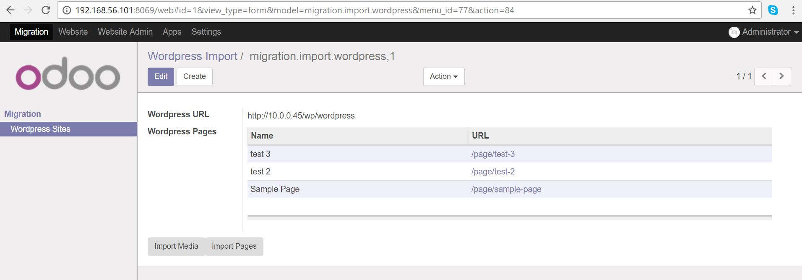

Copies content from Wordpress CMS into Odoo
*NOTE* Uses version 2 of the REST API which requires that the Wordpress website you are importing is atleast 4.7
*NOTE* Theme HTML, CSS and plugin functionality does not get moved over this can result in very different appearences between the two websites
Copies all media from the Wordpress media library into the Odoo media library
Copies the page content from Wordpress, importing images in the process and updating hyperlinks to there Odoo equivalent
Plugins and CSS do not get moved over so some degree of reworking the content for Odoo is still neccassary